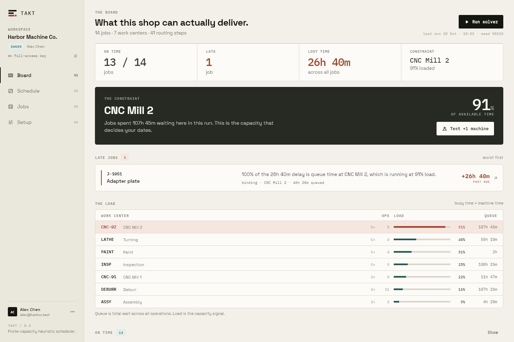
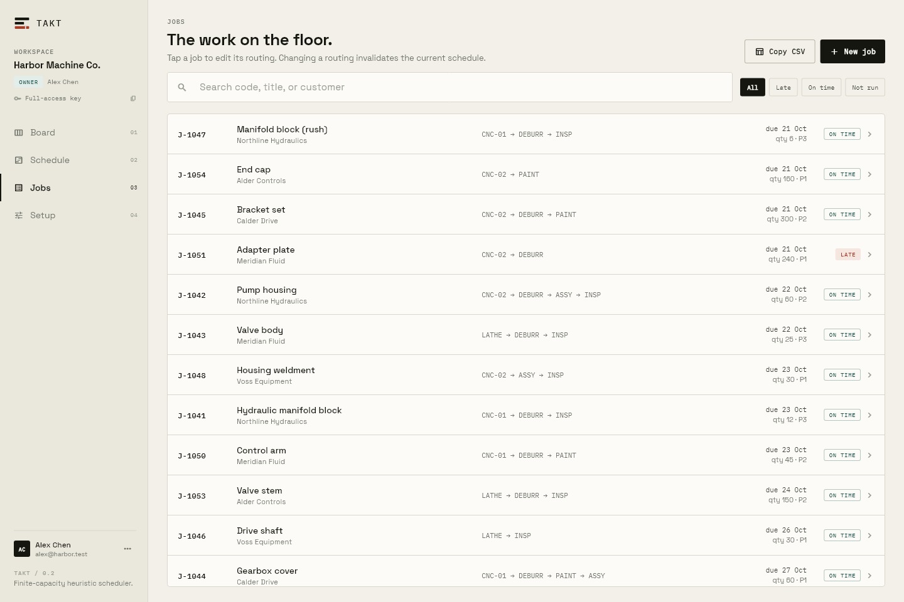
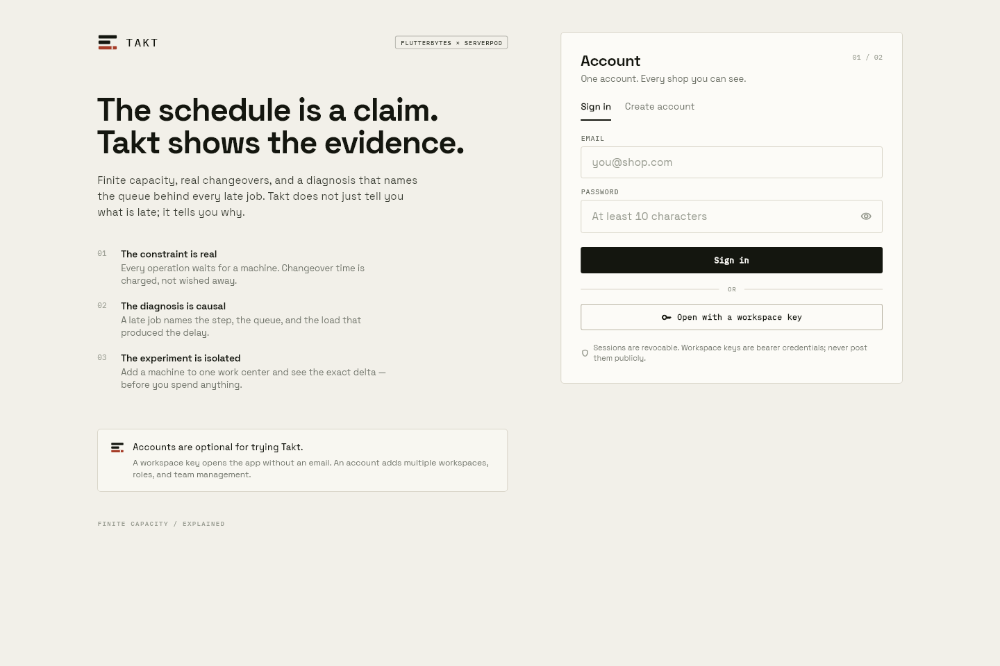
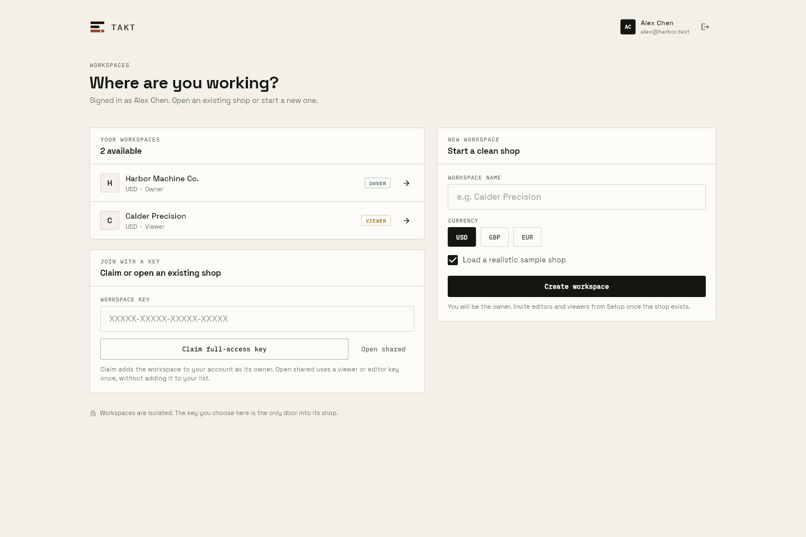
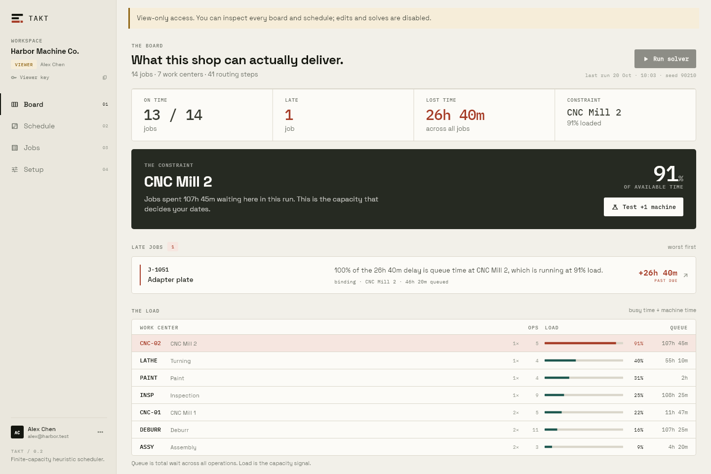

Takt
The scheduler that tells you why you’re late.
Most shop tools show
a red bar.
A red bar isn’t a reason.
Diagnosis board

Job J-1051 is late by 26h 40m. Takt traces every minute of that delay to queue time at CNC-02.
The seed stays identical.
Add one machine at CNC-02 —
the late job clears.
Jobs view

Search jobs, filter by status, copy CSV to clipboard — no fake export buttons.
Auth front door

Workspace picker

Accounts are optional. A guest key opens a workspace instantly. Signed in, roles are enforced on the server.
Read-only viewer

Viewer keys read but cannot write. Server rejects edits with a readable HTTP 400.
Takt — the scheduler
that tells you why you’re late.
Flutter · Serverpod · Real auth · 30 server tests · 17 Flutter tests